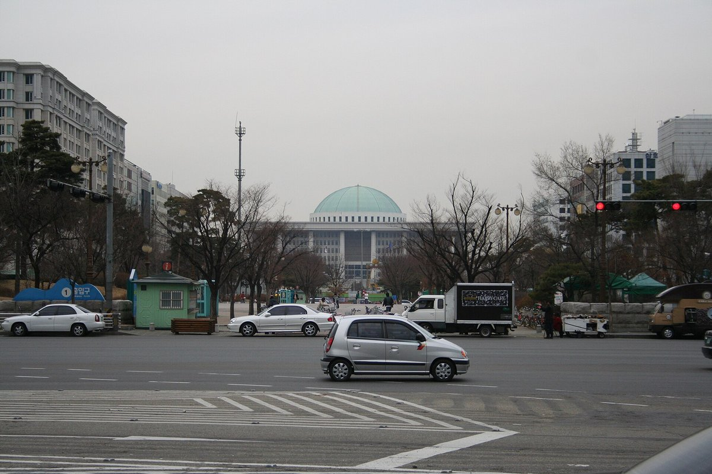
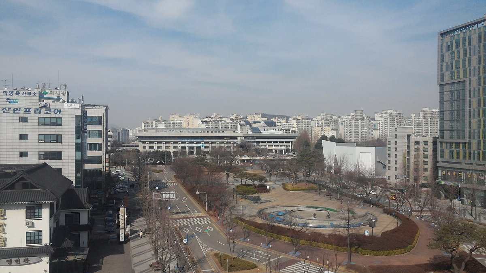
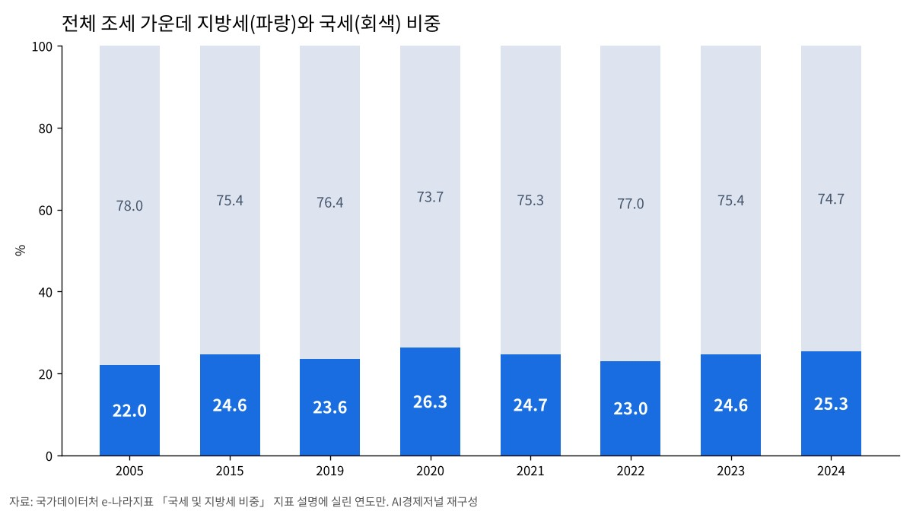

[10차 개헌과 지방분권①] 39년 만의 개헌 시도, 지방자치 조항은 그대로였다
균형발전 의무는 넣고 지방분권은 뺐다
시도지사협의회 「국세·지방세 7대 3, 재정분권으로」
AI경제저널=김갑봉 기자 | 1987년 이후 39년 만에 헌법을 고치려던 개정안은 지방자치 조항에 손대지 않았다. 올해 4월 3일 의원 187명이 발의한 개헌안은 헌법 이름과 전문, 계엄, 균형발전 네 곳을 손봤다. 헌법 제8장 지방자치의 제117조와 제118조는 1987년 문장 그대로 남았다.
그 개헌안은 5월 본회의에서 멈췄다. 국회의장은 내년 후반기 합의 개헌을 새 목표로 내걸었다. 박찬대 인천시장이 회장을 맡은 대한민국시도지사협의회는 지난달 재정분권을 다시 요구했다. 다음 개헌안이 지방정부의 권한을 다룰지는 아직 정해지지 않았다.

이름·전문·계엄·균형발전, 네 곳만 고쳤다
개헌안은 헌법 이름 「大韓民國憲法」을 「대한민국헌법」으로 바꿨다. 전문의 「4·19 민주이념」은 「4·19혁명, 부마민주항쟁 및 5·18민주화운동의 민주이념」으로 넓혔다.
제77조는 계엄을 선포한 대통령이 지체 없이 국회 승인을 받게 했다. 승인이 부결되거나 48시간 안에 승인이 없으면 계엄은 곧바로 효력을 잃는다. 국회가 재적의원 과반 찬성으로 해제를 의결해도 마찬가지다.
지역에 닿는 조문은 제123조 제2항 하나다. 지금 헌법은 「국가는 지역간의 균형있는 발전을 위하여 지역경제를 육성할 의무를 진다」고 적었다. 개헌안은 여기에 생활기반 구축과 지역 간 격차 해소를 더했다. 제안 이유는 생활기반을 교육·의료·문화·일자리·주거·교통으로 풀었다.
| 조문 | 내용 | 개정안 |
|---|---|---|
| 제명 | 헌법 이름 | 한글로 바꿈 |
| 전문 | 계승하는 민주이념 | 부마민주항쟁·5·18민주화운동 더함 |
| 제77조 | 계엄 | 국회 승인제, 48시간 안 미승인 때 효력 상실 |
| 제123조 제2항 | 지역 균형발전 | 생활기반 구축·격차 해소 의무 더함 |
| 제117조 | 자치사무·자치입법(「법령의 범위 안에서」) | 그대로 |
| 제118조 | 지방의회, 조직·운영은 법률로 | 그대로 |
자료 국회 의안정보시스템 의안원문, 국가법령정보센터. AI경제저널 정리
균형발전은 넣고 분권은 뺐다
제안 이유는 지역 불균형을 개헌의 까닭으로 들었다. 전국 기초지방자치단체의 절반 이상이 소멸 위기 지역이고, 인구의 과반이 일정 지역에 몰려 있다는 것이다. 국회가 18세 이상 1만2천 명에게 물은 결과도 실었다. 83.0%가 균형발전의 국가 책임을 헌법에 적는 데 찬성했다.
지방정부의 권한을 정하는 제117조는 고치지 않았다. 지금 헌법은 지방자치단체가 「법령의 범위 안에서」 자치에 관한 규정을 만들 수 있다고 정한다. 조례가 법률뿐 아니라 대통령령과 부령의 테두리 안에 놓인다. 헌법 제59조는 조세의 종목과 세율을 법률로 정하게 했다. 지방세의 세목과 세율도 국회가 만든 법률이 정한다.
분권 조항이 아예 거론되지 않은 것은 아니다. 김영배 더불어민주당 의원은 2월 24일 국회 본회의에서 최소한의 합의 의제를 꼽았다. 계엄 조항과 5·18 정신, 그리고 "지방분권 국가 대한민국을 선언하는 내용"이다. 4월 3일 발의된 개헌안에는 지방분권 대신 균형발전 의무가 들어갔다.
본회의에서 멈춘 개헌안
개헌안은 5월 7일 제435회 국회 제1차 본회의에 올랐다. 헌법 제130조는 개헌안을 재적의원 3분의 2 이상 찬성으로 의결하게 한다. 국민의힘 의원들이 표결에 참여하지 않았고, 투표는 오후 4시 4분 성립하지 않았다.
우원식 당시 국회의장은 다음 날 다시 표결하려 했다. 국민의힘이 무제한토론(필리버스터)으로 맞서자 그는 "의장은 헌법 개정안 상정하지 않겠습니다"라고 말했다. 6월 3일 지방선거와 함께 치르려던 국민투표 절차도 이날 멈췄다. 개헌안은 지금도 본회의 부의 상태로 계류돼 있다.
다시 열린 개헌 시간표, 지방분권은 아직 없다
조정식 국회의장은 7월 28일 기자간담회에서 개헌 일정을 내놨다. 의장 직속 헌법개정자문위원회를 출범시켜 로드맵과 의제를 마련하겠다고 했다. 국민이 직접 참여하는 디지털 플랫폼도 약속했다. 목표는 내년 후반기 합의 개헌이다.
의장이 꼽은 과제는 네 가지다. 5·18 정신의 헌법 전문 수록, 대통령 계엄선포권 제한, 권력구조 개편, 선거관리 개혁이다. 지방분권은 이 목록에 없다. 전국 49개 시민사회단체가 모인 시민주도 헌법개정 전국네트워크는 같은 날 성명을 냈다. 숙의와 공론이 가능한 시민참여 절차를 마련하라는 요구다.
인천시장이 이끄는 시도지사협의회 「재정분권」
지방정부의 요구는 돈에 모인다. 박찬대 인천시장은 대한민국시도지사협의회 회장이다. 그는 10월 19일 서울 프레스센터 기자간담회에서 국정과제인 국세·지방세 비율 7대 3 개선을 짚었다. 이 목표가 실질적인 재정분권으로 이어져야 한다는 것이다.
협의회 자료를 보면 국고보조사업은 2000년 7조4천억원에서 2024년 83조8천억원으로 11배 넘게 커졌다. 지방정부가 함께 내야 하는 대응지방비도 따라 늘었다. 협의회는 내년 주요 국고보조사업 11개의 대응지방비 증가액만 3조726억원으로 분석했다.
시·도지사들은 10월 16일 제주 간담회에서 공동건의문에 합의했다. 지방교부세 산정방식은 지금대로 둔다. 범정부 재정분권 TF를 다시 돌려 지방교부세율과 지방세 비중을 올린다. 건의문의 뼈대다.
인천시장이 협의회장으로 분권을 요구한 것은 처음이 아니다. 유정복 전 인천시장은 협의회장이던 2025년 3월 4일 분권형 헌법 개정안을 공표했다. 박 시장은 국회의원이던 올해 4월 개헌안 공동발의자 187명 가운데 한 명이었다.

국세 74.7%, 지방세 25.3%
국가데이터처 e-나라지표에 따르면 2024년 전체 조세 가운데 국세는 74.7%, 지방세는 25.3%였다. 2015년 지방세 비중 24.6%와 견주면 0.7%포인트 늘었다. 2019년 이후로는 2020년의 26.3%가 가장 높았다.

올해 지방자치단체 평균 재정자립도는 47.3%다. 행정안전부 「2026년도 지방자치단체 예산 및 기금 개요」의 값이다. 재정자립도는 총수입에서 지방세와 세외수입이 차지하는 비중이다. 지방정부 살림의 절반 넘게를 스스로 거두지 않은 돈으로 꾸린다는 뜻이다.
인천에 남은 물음
국회 설문에서 응답자 69.5%는 합의 가능한 의제부터 고치는 단계적 개헌을 지지했다. 지난 개헌안은 그 첫 단계에서 지방자치 조항을 고르지 않았다. 의장이 꼽은 다음 개헌 과제에도 지방분권은 아직 없다.
인천경실련은 지난해 8월 12일 성명을 냈다. 국회가 개헌특별위원회를 꾸려 지방분권 개헌에 대한 지방정부와 주민 의견을 모으라는 촉구다. 시도지사협의회가 같은 달 7일 낸 특별지방행정기관 이양 공동건의문도 지지했다. 해양항만·고용노동 등 여섯 분야 사무를 재정·인력·조직과 함께 지방으로 넘기라는 건의다.
참고문헌
- "대한민국헌법 개정안(우원식의원 등 187인, 의안번호 2218099)", 국회 의안정보시스템, 2026.4.3., https://likms.assembly.go.kr/bill/bi/billDetailPage.do?billId=PRC_M2A6F0G4E0U3T1Z7E5L6I3A1T5D3N9
- "제22대국회 제435회 제1차·제2차 국회본회의 회의록", 국회, 2026.5.7.·5.8., https://record.assembly.go.kr/assembly/
- "제22대국회 제432회 제8차 국회본회의 회의록", 국회, 2026.2.24., https://record.assembly.go.kr/assembly/
- "대한민국헌법"(제59조·제117조·제118조·제123조·제130조), 국가법령정보센터, https://www.law.go.kr/법령/대한민국헌법
- "박찬대 대한민국시도지사협의회장 기자 간담회 개최", 대한민국시도지사협의회, 2026.10.19., https://www.gaok.or.kr/front/viewAritcle.do?bbsId=BBS_0005&nttId=47865
- "유정복 시도지사협의회장 분권형 헌법 개정안 공표", 대한민국시도지사협의회, 2025.3.4., https://www.gaok.or.kr/front/viewAritcle.do?bbsId=BBS_0005&nttId=29492
- "[시민개헌넷] 개헌 논의 일정 밝힌 의장, 시민참여 보장해야", 시민주도 헌법개정 전국네트워크(참여연대 게재), 2026.7.28., https://peoplepower21.org/solidarity/2026730
- "국세 및 지방세 비중", 국가데이터처 e-나라지표, https://www.index.go.kr/unify/idx-info.do?idxCd=1123
- "지방자치단체 재정자립도"(행정안전부 「2026년도 지방자치단체 예산 및 기금 개요」), 국가데이터처 e-나라지표, https://www.index.go.kr/unity/potal/main/EachDtlPageDetail.do?idx_cd=2458
- "[성명] 조속한 '특별지방행정기관 지방 이양'과 '지방분권 개헌'을 촉구한다", 인천경실련, 2025.8.12., https://ccej.or.kr/posts/xlto31a
[사진 출처]
- [사진 1] 위키미디어 공용, Bcody80, 「Korean National Assembly」(퍼블릭 도메인, 2007년 2월 17일 촬영)
- [사진 2] 인천광역시청 총무과, 위키미디어 공용 「Park Chan-dae's Portrait (2026.7)」(공공누리 제1유형 출처표시)
- [사진 3] 위키미디어 공용, IRTC1015, 「Incheon City Hall」(퍼블릭 도메인, 2015년 3월 5일 촬영)
- [표·도표 1] AI경제저널 작성. 자료 국회 의안정보시스템, 국가법령정보센터, 국가데이터처 e-나라지표
※ 이 기사는 AI 프로그램 클로드를 활용해 작성했습니다.
관련기사
- 인천 신설구 100일, 법은 「지원하며」라 썼는데 개편 국비 예산은 두 해째 0원
- 인천시, 강화·옹진 섬 식수 공급 개선 토론회 열어
- 인천시·필라델피아, 바이오·교육·문화 교류 확대 논의
- 인천시와 군·구는 무엇을 연구에 맡기나, 정책연구 727건을 다 세어 봤다
저작권자 © AI경제저널 무단전재 및 재배포, AI학습 및 활용 금지